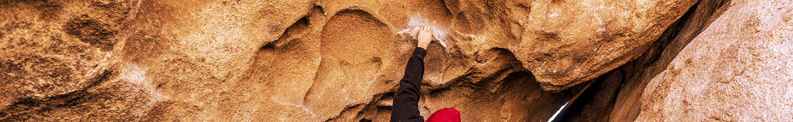
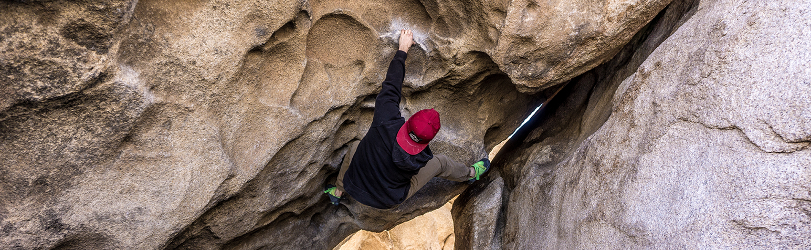
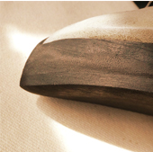
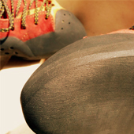
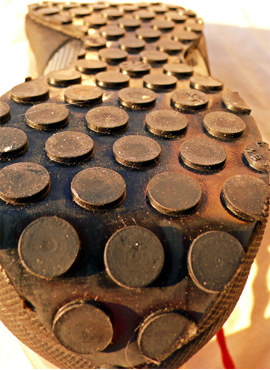
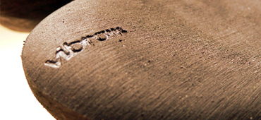
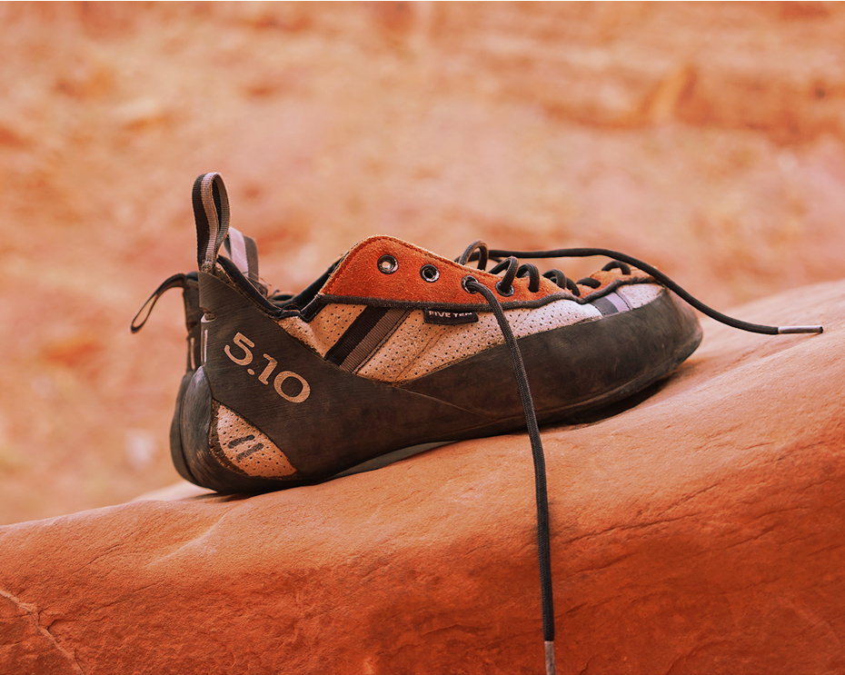

<!doctype html>
<html lang="en">
<head>
    <!-- Required meta tags -->
    <meta charset="utf-8">
    <meta name="viewport" content="width=device-width, initial-scale=1, shrink-to-fit=no">

    <!-- Bootstrap CSS -->
    <link rel="stylesheet" href="./css/bootstrap.css">
    <link rel="stylesheet" href="assets/fonts/font-awesome/css/font-awesome.min.css">
    <link rel="stylesheet" href="./css/common.css">
    <link rel="stylesheet" href="./css/custom-header.css">
    <link rel="stylesheet" href="./css/body.css">

    <title>Hello, world!</title>
</head>
<body id="custom">
<!-- HEADER -->
<nav class="navbar navbar-light sticky-top col-lg-10 offset-lg-1">
    <a class="navbar-brand"></a>
    <ul class="nav justify-content-end menu-items-nav">
        <li class="nav-item mobile-menu">
            <div class="dropdown">
                <button class="btn-outline-light" type="button" id="dropdownMenuButton" data-toggle="dropdown"
                        aria-haspopup="true" aria-expanded="false">
                    <span class="navbar-toggler-icon"></span>
                </button>
                <div class="dropdown-menu dropdown-menu-right" aria-labelledby="dropdownMenuButton">
                    <a class="dropdown-item" href="#">Cennik</a>
                    <a class="dropdown-item" href="#">Poradnik</a>
                    <a class="dropdown-item" href="#">Regulamin</a>
                    <a class="dropdown-item" href="#">Fotogaleria</a>
                    <a class="dropdown-item" href="#">Kontakt</a>
                    <a class="dropdown-item" href="#">Dane do przelewu</a>
                    <a class="dropdown-item" href="#">English</a>
                </div>
            </div>
        </li>
        <li class="nav-item">
            <a class="nav-link" href="#">EN</a>
        </li>
        <li class="nav-item">
            <a class="nav-link" href="#">Zamów</a>
        </li>
        <li class="nav-item">
            <a class="nav-link disabled" href="#">Basket</a>
        </li>
    </ul>
</nav>
<!------------------------------------------------------------------------------------------>
<div class="body container">
    <div>
        <div class="col-11 col-lg-8 offset-lg-1 col-xl-6 subtitle">
            Profesjonalna naprawa butów wspinaczkowych i trekkingowych
        </div>
    </div>
    <div class="row no-gutters">
        <div class="custom-section bg-image col-lg-10 offset-lg-1">
            <div class="bg-top-image col-md-12 offset-md-2">
                
                
            </div>
            <div class="bullets black-bg white-text">
                <div class="row no-gutters col-lg-10 offset-lg-1">
                    <div class="col-sm-12 col-md-4">
                        <div class="bullet"></div>
                        <span>Największy na rynku wybórrodzajów gumy na podeszwę</span>
                    </div>
                    <div class="col-sm-12 col-md-4">
                        <div class="bullet"></div>
                        <span>Przystępne ceny oraz wysoka jakość usług</span>
                    </div>
                    <div class="col-sm-12 col-md-4">
                        <div class="bullet"></div>
                        <span>Krótkie terminy realizacji zamówień</span>
                    </div>
                </div>
            </div>
            <div class="row no-gutters">
                <div class="about black-bg white-text">
                    <div class="title offset-lg-1"> O nas</div>
                    <div class="col-lg-10 offset-lg-1 desc main-text-size">
                        <div class="col-lg-6 first-part">
                            Friction.pl powstało z końcem 2010 roku jako firma specjalizująca się w naprawie i
                            podklejaniu
                            obuwia wspinaczkowego.
                            Jesteśmy grupą wspinających się przyjaciół. Za nami wiele sezonów wspinaczkowych w różnych
                            formacjach i rodzajach skały na kilku kontynentach.
                            W tym czasie udało nam się zużyć
                            'kilka' par butów wspinaczkowych począwszy od l
                            egendarnych korkerów poprzez nie mniej legendarne Ninja i Lasery
                            aż do współczesnych topowych modeli.
                        </div>
                        <div class="col-lg-6 second-part">
                            Doświadczenie pozwala nam na dobre rozumienie różnych aspektów użycia
                            i konstrukcji buta wspinaczkowego. Dzięki temu jesteśmy w stanie sprostać nawet
                            najwyższym oczekiwaniom. Niezależnie od poziomu na jakim się wspinasz,
                            buty wspinaczkowe odgrywają kluczową rolę. Precyzja i dobre czucie skały pozwalają
                            skupić się na drodze i cieszyć się wspinaniem. Dlatego też naszym priorytetem jest
                            zapewnienie najwyższej jakości wykonywanych napraw.
                        </div>
                        <button
                                class="btn light-button custom-button show-more mobile-only"
                                style="right: 30px"
                        >Zobacz więcej
                            <i class="fa fa-long-arrow-right" aria-hidden="true"></i></button>
                    </div>
                </div>
            </div>
        </div>
    </div>
    <div class="row no-gutters">
        <div class="common-section white-bg black-text col-lg-10 offset-lg-1">
            <div class="about">
                <div class="title offset-lg-1" style="padding-left: 15px"> Poradnik</div>
                <div class="main-text-size row">
                    <div class=" desc col-lg-5 offset-lg-1" style="padding-left: 30px;">
                        <p>Kiedy konieczna jest naprawa?</p>
                        Najlepsze efekty uzyskuje się jeśli nie doszło do całkowitego zużycia podeszwy na czubku, oraz
                        jeśli nie
                        zostały uszkodzone ranty.
                        W praktyce oznacza to, że jeśli grubość podeszwy na czubku wynosi ok. 20-30% grubości
                        pierwotnej, to jest
                        to najlepszy moment na dokonanie naprawy. Inaczej mówiąc, jeśli zaczynamy odczuwać dyskomfort,
                        to jest to
                        sygnał aby bliżej przyjrzeć się butom i nie zwlekać z naprawą.
                        <div><span style="font-weight: bold">Nie przecieraj rantów!</span> W porę wykonana wymiana
                            samej
                            podeszwy
                            gwarantuje najlepsze zachowanie pierwotnych parametrów buta.
                        </div>
                        <button
                                class="btn black-button custom-button show-more screen-only"
                                style="margin-top: 20px"

                        >
                            Zobacz więcej
                            <i class="fa fa-long-arrow-right" aria-hidden="true"></i></button>
                    </div>
                    <div class="col-lg-4 offset-lg-1 images">
                        <div class="row">
                            <div class="col-lg-5">
                                <div class="row">
                                    
                                </div>
                                <div class="row">
                                    
                                </div>

                            </div>
                            <div class="col-lg-7">
                                
                            </div>
                        </div>
                        <div class="row">
                            <div class="col-lg-9 no-gutters" style="padding: 0"></div>
                            <div class="col-lg-2 high-button-container" style="padding-bottom: 10px;">
                                <button class="btn very-special-button black-bg">
                                    <i class="fa fa-long-arrow-right" aria-hidden="true"></i>
                                </button>
                            </div>
                        </div>
                    </div>
                </div>

                <!--<button-->
                        <!--class="btn black-button custom-button show-more mobile-only right"-->

                <!--&gt;-->
                    <!--Zobacz więcej-->
                    <!--<i class="fa fa-long-arrow-right" aria-hidden="true"></i></button>-->
            </div>
        </div>
    </div>
    <div class="row no-gutters rubbers">
        <div class="col-lg-5 offset-lg-1 black-bg rubber-img-container">
            
        </div>
        <div class="col-lg-5 black-bg about" style="display: flex; align-items: center; padding-top: 20px">
            <div class="white-text" style="padding-left: 30px">
                <div class="title white-text" style="padding-left: 0">Gumy</div>
                <p>
                    Czym różnią się dostępne rodzaje gum na podeszwę?

                </p>
                <div class="main-text-size">Gumy stosowane na podeszwy obuwia wspinaczkowego ewoluowały od
                    prawie 30 lat. Tak długi okres pracy różnych ośrodków
                    badawczo-wdrożeniowych przyczynił się do obecnej bardzo szerokiej
                    oferty. W Polsce od wielu lat największą renomą i popularnością
                    cieszyły się gumy produkowane przez firmę Stealth, którymi były
                    fabrycznie podklejane buty 5.10. Od kilku lat równym uznaniem
                    wspinacze zaczęli darzyć najnowsze produkty firmy Vibram.
                </div>
                <!--<button-->
                        <!--class="btn black-button custom-button show-more screen-only"-->
                        <!--style="margin-top: 20px"-->

                <!--&gt;-->
                    <!--Zobacz więcej-->
                    <!--<i class="fa fa-long-arrow-right" aria-hidden="true"></i></button>-->
                <!--<button-->
                        <!--class="btn black-button custom-button show-more mobile-only right"-->

                <!--&gt;-->
                    <!--Zobacz więcej-->
                    <!--<i class="fa fa-long-arrow-right" aria-hidden="true"></i></button>-->
            </div>
        </div>
    </div>
    <div class="row no-gutters orders">
        <div class="common-section white-bg black-text col-lg-10 offset-lg-1" style="padding-left: 30px;">
            <p class="text-center">SKLADANIE ZAMOWIEN</p>
            <div class="row">
                <div class="col-lg-6">
                    <i class="fa fa-shopping-basket" aria-hidden="true"></i>
                    <p>Złóż zamówienie</p>
                    <p>Give a little credit to our public schools.
                        For one beautiful night I knew what it was like to be a grandmother.
                        Subjugated, yet honored. Why did you bring us here? Well, thanks to the Internet,
                        I'm now bored with sex.</p>
                </div>
                <div class="col-lg-6">
                    <i class="fa fa-shopping-basket" aria-hidden="true"></i>
                    <p>Złóż zamówienie</p>
                    <p>Give a little credit to our public schools.
                        For one beautiful night I knew what it was like to be a grandmother.
                        Subjugated, yet honored. Why did you bring us here? Well, thanks to the Internet,
                        I'm now bored with sex.</p>
                </div>
            </div>
            <div class="row">
                <div class="col-lg-6">
                    <i class="fa fa-shopping-basket" aria-hidden="true"></i>
                    <p>Złóż zamówienie</p>
                    <p>Give a little credit to our public schools.
                        For one beautiful night I knew what it was like to be a grandmother.
                        Subjugated, yet honored. Why did you bring us here? Well, thanks to the Internet,
                        I'm now bored with sex.</p>
                </div>
                <div class="col-lg-6">
                    <i class="fa fa-shopping-basket" aria-hidden="true"></i>
                    <p>Złóż zamówienie</p>
                    <p>Give a little credit to our public schools.
                        For one beautiful night I knew what it was like to be a grandmother.
                        Subjugated, yet honored. Why did you bring us here? Well, thanks to the Internet,
                        I'm now bored with sex.</p>
                </div>
            </div>
        </div>
    </div>
</div>

<!-- Optional JavaScript -->
<!-- jQuery first, then Popper.js, then Bootstrap JS -->
<script src="https://code.jquery.com/jquery-3.3.1.slim.min.js"
        integrity="sha384-q8i/X+965DzO0rT7abK41JStQIAqVgRVzpbzo5smXKp4YfRvH+8abtTE1Pi6jizo"
        crossorigin="anonymous"></script>
<script src="https://cdnjs.cloudflare.com/ajax/libs/popper.js/1.14.3/umd/popper.min.js"
        integrity="sha384-ZMP7rVo3mIykV+2+9J3UJ46jBk0WLaUAdn689aCwoqbBJiSnjAK/l8WvCWPIPm49"
        crossorigin="anonymous"></script>
<script src="https://stackpath.bootstrapcdn.com/bootstrap/4.1.1/js/bootstrap.min.js"
        integrity="sha384-smHYKdLADwkXOn1EmN1qk/HfnUcbVRZyYmZ4qpPea6sjB/pTJ0euyQp0Mk8ck+5T"
        crossorigin="anonymous"></script>
</body>
</html>